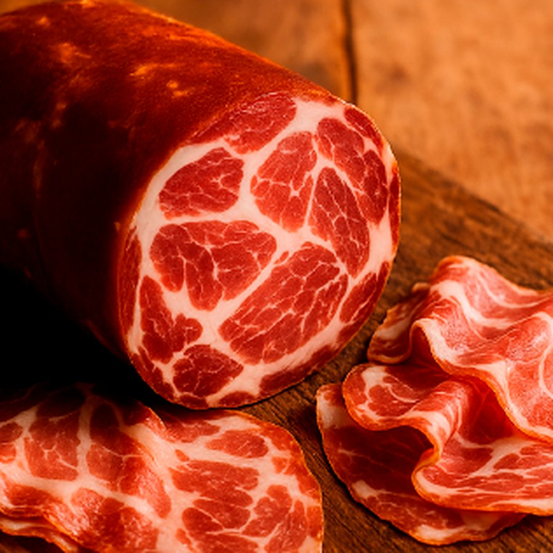

Tripa fibrosa para bondiola
Calibres Ø107 a Ø165 según el tamaño de la pieza, plisada en tubos con tratamiento E.I.: se embute directo de la caja, sin remojo.

- Ø107 a Ø165calibres
- E.I.sin remojo
- Tubos plisados
- Red de 20 cuadrospara completar la pieza

Cómo elegir el calibre
El calibre es el diámetro de la tripa en milímetros. Para bondiola se usa de Ø107 (piezas chicas) a Ø165 (piezas grandes). Si dudás entre dos, te mandamos muestras de ambos.
La bondiola completa
Después de la tripa, red elástica de 20 cuadros (Bondiola N°3, N°4 o N°5) y celofán de 45×50, 50×60 o 70×90 cm.
Preguntas frecuentes
¿Adherente o de pelado fácil?
Para bondiola que se vende sin tripa, pelado fácil. Decinos cómo la comercializás y elegimos el tratamiento interior.